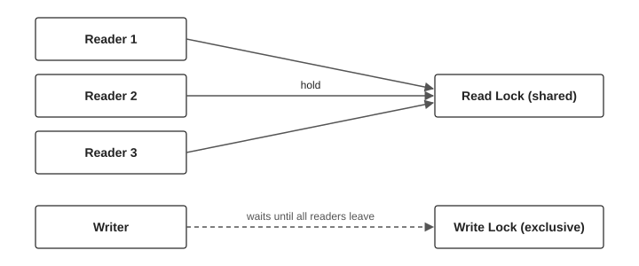

A Reader–writer Lock is a synchronization mechanism that allows multiple threads to read shared data simultaneously, but only one thread to write at a time.
Designed to improve concurrency in applications where reading happens much more frequently than writing.
Basic concept
Consider a shared bank account balance accessed by five threads.
Reader threads only retrieve the balance.
Writer threads deposit or withdraw money.
With an ordinary mutex, only one thread can access the balance at a time, even if every thread is only reading it.
With a Reader–Writer lock:
Multiple readers can execute concurrently.
Only one writer can execute at a time.
A writer cannot execute while readers hold the lock.
Readers cannot execute while a writer holds the lock.
Read–write lock compatibility
Lock held by
Read requested
Write requested
Read held
Allowed
Blocked
Write held
Blocked
Blocked
Compatibility assumes different threads requesting locks. Reentrant acquisition by the owning thread has additional rules.
Visual demonstration
This interactive example demonstrates how readers and writers acquire the same lock.
Lock simulator
Click a thread to request a lock. Click its Release button to free it and admit waiting threads.
Shared resource
Free
Active lock holders
Waiting queue (0)
No lock requested yet.
Try this sequence:
Click R1 and R2. Both acquire the read lock.
Click W1. It must wait until both readers release.
Click R3. With fair queuing enabled, it waits behind W1.
Release R1 and R2. W1 gets the write lock.
Release W1. R3 acquires the read lock.
This illustrates reader concurrency, writer exclusivity and queue ordering. Actual Java lock scheduling is more nuanced than the simplified simulator.
How does a Reader–Writer Lock work internally
A simplified implementation maintains:
int activeReaders = 0;
boolean activeWriter = false;
int waitingWriters = 0;
Acquiring a read lock
lockRead():
synchronized:
while activeWriter OR waitingWriters > 0:
wait()
activeReaders++
This is a writer-preference policy: new readers wait if a writer is already waiting.
Releasing a read lock
unlockRead():
synchronized:
activeReaders--
if activeReaders == 0:
notifyAll()
When the final reader releases its lock, a waiting writer may proceed.
Acquiring a write lock
lockWrite():
synchronized:
waitingWriters++
while activeWriter OR activeReaders > 0:
wait()
waitingWriters--
activeWriter = true
This pseudocode illustrates the state transitions. Real implementations additionally handle ownership, scheduling, interruption and other concurrency details.
get allows concurrent readers (Multiple threads can execute this simultaneously)
put and remove need exclusive access (Only one thread can execute this at a time)
true requests a fair lock policy, which generally favors threads that have waited longer.
finally ensures locks are released even when exceptions occur.
The underlying Hashtable is not thread-safe by itself but every access is protected by the same locking mechanism.
Reader–Writer Lock versus Mutex
Feature
Mutex / synchronized
Reader–Writer Lock
Concurrent readers
No
Yes
Concurrent writers
No
No
Reader + writer
No
No
Implementation
Simpler
More complex
Read-heavy workload
May limit throughput
Can improve throughput
Overhead
Usually lower
Usually higher
A Reader–Writer Lock is not always faster. When operations are very short, writes are frequent, or contention is low, coordination overhead may outweigh the benefit of concurrent reading.
Java’s ReentrantReadWriteLock does not support upgrading a held read lock directly to a write lock. Attempting this can cause the thread to wait indefinitely.
Instead, release the read lock, acquire the write lock, and recheck the condition because the protected state may have changed in between.
This allows a thread to move from exclusive write access to shared read access without an unlocked gap.
7. How does this relate to SQL Server?
SQL Server uses a related concept through shared and exclusive database locks.
SQL Server lock
Purpose
Java analogy
Shared (S)
Reading data
Read lock
Exclusive (X)
Modifying data
Write lock
Update (U)
Coordinating potential updates
No direct equivalent
For example, under traditional locking-based READ COMMITTED isolation, a query may acquire shared locks while reading:
SELECT balance
FROM Accounts
WHERE id = 101;
A transaction modifying the same row can acquire an exclusive lock:
BEGIN TRANSACTION;
UPDATE Accounts
SET balance = balance + 100WHERE id = 101;
COMMIT;
Shared (S) and exclusive (X) locks conflict, just as reader and writer locks do. However, SQL Server also has row versioning, intent locks, lock hierarchies, and isolation-level-specific rules.
Important: If READ_COMMITTED_SNAPSHOT is enabled, ordinary reads under READ COMMITTED typically use row versions rather than shared data locks, so readers generally don’t block writers.
8. When should you use Reader–Writer Locks?
They are useful for read-heavy shared resources, such as configuration data, in-memory caches, metadata tables, and shared indexes.
For example, if 100 threads frequently read configuration data but updates occur only occasionally, permitting concurrent reads can substantially reduce contention.
However, in Java, consider ConcurrentHashMap for simple concurrent map operations, StampedLock when optimistic reads are useful, and plain synchronized or ReentrantLock when exclusive locking is simpler and sufficient.
Key takeaway: A Reader–Writer Lock allows many readers OR one writer, but never readers and writers accessing the protected resource simultaneously. Its main advantage is improving concurrency in read-heavy workloads while preserving exclusive access for modifications.
A read-write lock is a pair of locks that guard the same data: a shared read lock and an exclusive write lock.
Any number of threads can hold the read lock at the same time, as long as no thread holds the write lock.
Only one thread can hold the write lock, and only while no thread holds the read lock.
In Java the contract is the ReadWriteLock interface, and ReentrantReadWriteLock is its standard implementation.
A plain lock lets one thread in at a time, even when every thread only reads. Reads never change the data, so they cannot interfere with each other. A read-write lock uses that fact: readers share the lock and run in parallel, and only a writer needs the data to itself.

Lock Compatibility
Currently Held
Read Request
Write Request
Nothing
Granted
Granted
Read lock, other threads
Granted
Waits
Write lock, another thread
Waits
Waits
Read lock, same thread
Granted (reentrant)
Waits forever (no upgrade)
Write lock, same thread
Granted (downgrade)
Granted (reentrant)
ReentrantLock vs ReentrantReadWriteLock vs StampedLock
Feature
ReentrantLock
ReentrantReadWriteLock
StampedLock
Parallel Readers
No
Yes
Yes
Reentrant
Yes
Yes
No
Optimistic Reads
No
No
tryOptimisticRead()
Read to Write Upgrade
Not applicable
No, it deadlocks
tryConvertToWriteLock()
Write to Read Downgrade
Not applicable
Yes
tryConvertToReadLock()
Conditions
Yes
Write lock only
No
Fair Mode
Yes
Yes
No
Best For
General mutual exclusion
Read-heavy data with longer reads
Very read-heavy data with short reads
Key Features
Reentrancy A thread can take the read lock or the write lock again while it already holds it. Each lock call needs its own unlock.
Downgrading A thread that holds the write lock can take the read lock and then release the write lock. It keeps read access and no other writer can slip in between.
No Upgrading A thread that holds only the read lock cannot take the write lock. The write lock waits for every reader to leave, including the thread itself, so the call never returns.
Fairness In the default non-fair mode the lock is handed to whichever thread gets it first, which gives the best throughput. In fair mode threads get it in roughly arrival order, so a stream of readers cannot hold off a waiting writer.
Conditions The write lock supports newCondition(). The read lock does not, because a shared lock cannot give a thread the exclusive access that waiting on a condition needs.
Hold Limit Each lock allows at most 65535 holds: shared holds across all readers for the read lock, and recursive holds for the write lock. Going past it throws an Error.
Pros and Cons
Pros
Higher Read Throughput Readers run in parallel, so read-heavy data is no longer a single-file queue.
Same Correctness as a Lock Writes stay exclusive, so a reader never sees a half-finished update.
Full Lock API Both locks support tryLock, timeouts and interruptible waits, like ReentrantLock.
Safe Downgrading A writer can move straight to read access without letting another writer in.
Cons
Extra Overhead Tracking readers costs more than a plain lock. With short reads or frequent writes it is often slower than ReentrantLock.
Starvation Risk In non-fair mode a busy stream of readers can keep a writer waiting for a long time.
No Upgrade Code that reads, decides to write and then asks for the write lock deadlocks itself.
Shared State in Reads Readers run together, so the read path must not change anything, not even a lazily filled field or an access-ordered map.
Best Practices
Use a read-write lock only when reads clearly outnumber writes and each read takes a noticeable time. Measure against a plain lock first.
Call lock() just before try and unlock() in the matching finally, for both locks.
Never ask for the write lock while holding the read lock. Release the read lock, take the write lock, then check the state again.
To keep read access after a write, downgrade: take the read lock before releasing the write lock.
Choose fair mode when writers must not wait behind an endless stream of readers, and accept the lower throughput.
Keep the read path free of side effects. A LinkedHashMap in access order, for example, changes on every get().
For very short reads, consider StampedLock optimistic reads or an immutable snapshot in a volatile field instead.
Creates the lock pair. The default is non-fair, which gives higher throughput. In fair mode, threads get the lock in roughly arrival order, so waiting writers are not starved by new readers.
var rw = newReentrantReadWriteLock(); Non-fair, the defaultvar fairRw = newReentrantReadWriteLock(true); Fair ordering
boolean isFair()
Returns true if the lock was created in fair mode.
Returns the number of read holds across all threads. A thread that took the read lock twice counts twice. Meant for monitoring, not for making locking decisions.
Returns true if any thread is waiting on the given condition of the write lock. The caller must hold the write lock, or it throws IllegalMonitorStateException.
Takes the read lock only if no other thread holds the write lock at that moment, and returns at once. It ignores fair ordering and can get ahead of waiting threads.
if (rw.readLock().tryLock()) {
try {
return rates.get(currency);
} finally {
rw.readLock().unlock();
}
}
return lastKnownRate; A writer is busy, use the older value
Releases one read hold. When the last reader leaves, a waiting writer can proceed. Throws IllegalMonitorStateException if the current thread does not hold the read lock.
Waits up to the given time for the write lock. Returns false if readers or another writer kept it busy for the whole time.
if (!rw.writeLock().tryLock(1, TimeUnit.SECONDS)) returnfalse; Try again latertry {
reload();
returntrue;
} finally {
rw.writeLock().unlock();
}
void unlock()
Releases one write hold. When the hold count reaches 0, waiting readers or a waiting writer can proceed. Throws IllegalMonitorStateException if the current thread does not hold the write lock.